File list
This special page shows all uploaded files.
{kind=link}
{kind=link}
| Date | Name | Thumbnail | Size | User | Description | Versions |
|---|---|---|---|---|---|---|
| 20:13, 18 May 2017 | MW1.png (file) | 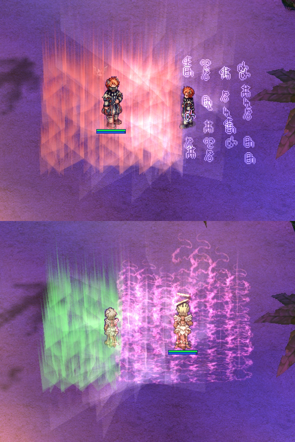 | 900 KB | DualityDiscretion | 1 | |
| 17:58, 6 October 2016 | Character Ranger2.jpg (file) | 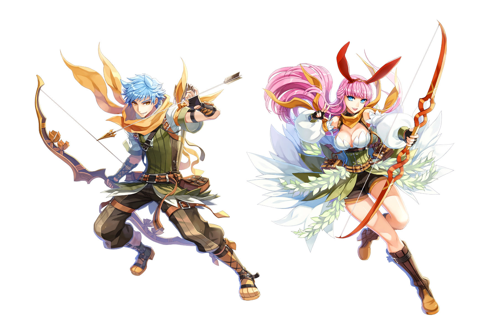 | 923 KB | Inberun | 1 | |
| 17:21, 24 November 2018 | Navloe6.png (file) | 938 KB | AloeLeaflet | 1 | ||
| 18:54, 28 June 2022 | Monkeyplayer.jpg (file) |  |
987 KB | Kancell | 1 | |
| 22:32, 7 May 2019 | MHheader3.png (file) | 990 KB | Panic | 1 | ||
| 16:28, 6 October 2018 | AlcheAlcheAlche.png (file) | 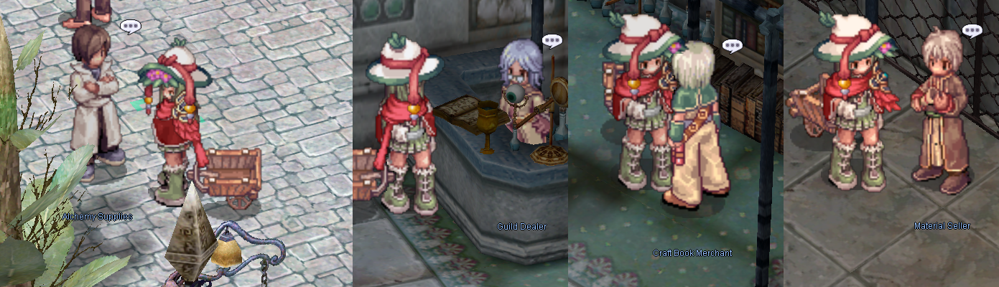 | 1,003 KB | AloeLeaflet | 1 | |
| 10:54, 9 April 2018 | Madomeme2.gif (file) | 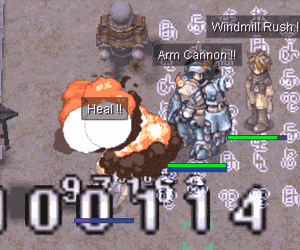 | 1,007 KB | RadenWA | 1 | |
| 15:53, 6 October 2018 | AldeAlcheSmall.png (file) | 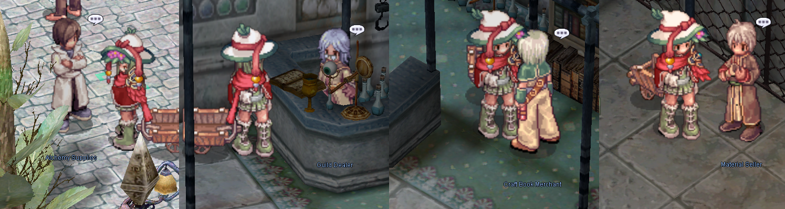 | 1,007 KB | AloeLeaflet | 1 | |
| 14:07, 13 February 2016 | Acidgif3.gif (file) | 1.01 MB | Adri | 1 | ||
| 04:07, 18 March 2019 | Main office 1st floor.png (file) |  |
1.03 MB | Panic | 1 | |
| 15:09, 30 September 2016 | Ranger Arrow Storm.gif (file) | 1.04 MB | Akenoyuki | for Fortunity PVM Guide | 1 | |
| 23:52, 20 September 2017 | GatesofHellCombo250.gif (file) | 1.04 MB | Halves | 1 | ||
| 17:20, 24 November 2018 | Navloe1.png (file) | 1.07 MB | AloeLeaflet | 1 | ||
| 17:21, 24 November 2018 | Navloe3.png (file) |  |
1.07 MB | AloeLeaflet | 1 | |
| 23:53, 20 September 2017 | TigerCannonCombo250.gif (file) | 1.07 MB | Halves | 1 | ||
| 17:21, 24 November 2018 | Navloe5.png (file) | 1.07 MB | AloeLeaflet | 1 | ||
| 17:21, 24 November 2018 | Navloe2.png (file) |  |
1.08 MB | AloeLeaflet | 1 | |
| 17:21, 24 November 2018 | Navloe4.png (file) | 1.09 MB | AloeLeaflet | 1 | ||
| 17:12, 3 September 2018 | ScreenNovaRO119.jpg (file) | 1.12 MB | Leriaskho | 1 | ||
| 14:21, 14 April 2018 | Meteor Strike SN Juperos.jpeg (file) | 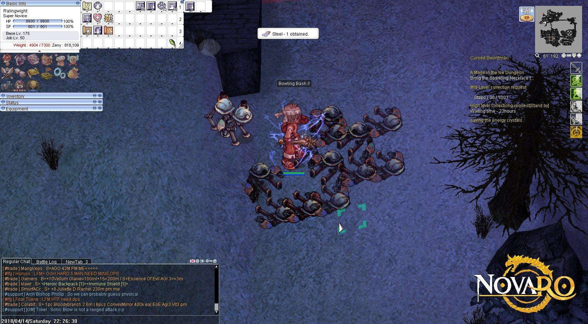 | 1.12 MB | G5457s | A Meteor Strike build Super Novice having fun farming in Juperos | 1 |
| 20:10, 26 August 2016 | CLSReb.png (file) | 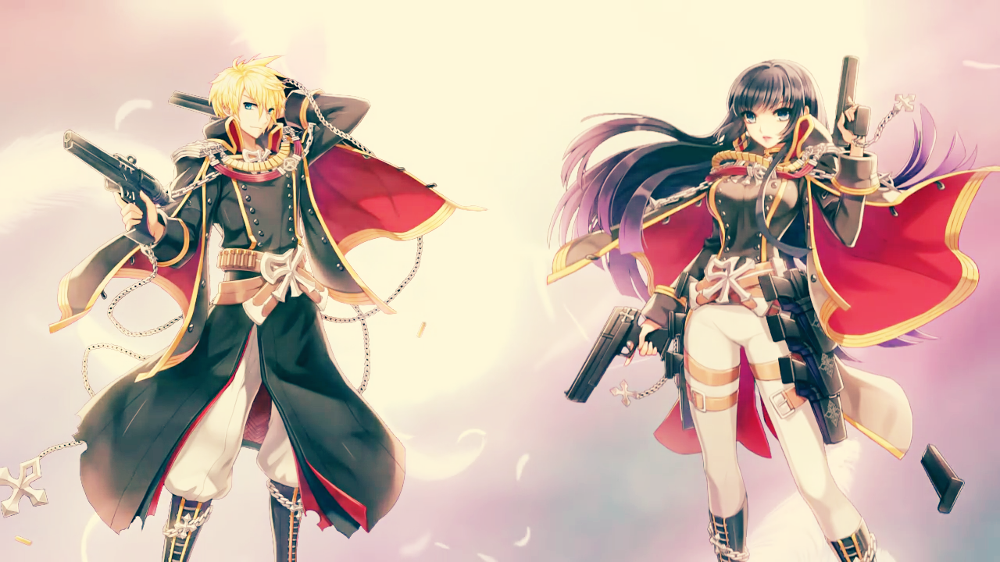 | 1.14 MB | Fyrus | 1 | |
| 06:02, 1 April 2017 | Pure Soul Dodge.gif (file) | 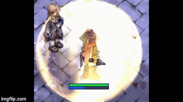 | 1.15 MB | Game | 1 | |
| 03:21, 15 February 2018 | NovaExt.png (file) | 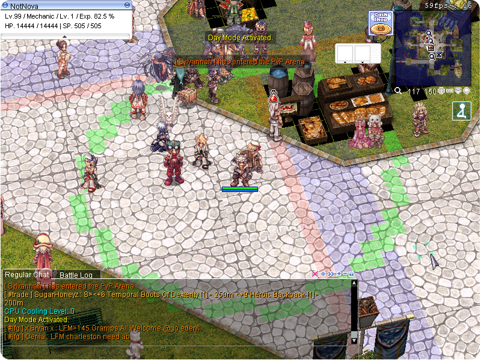 | 1.16 MB | DualityDiscretion | 1 | |
| 10:16, 21 October 2019 | Bio5 custom grf.png (file) | 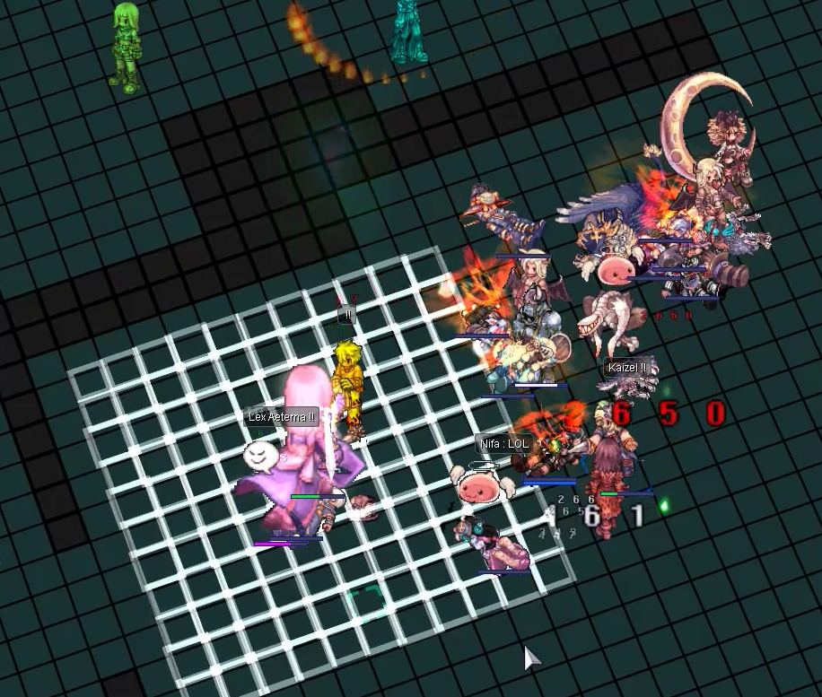 | 1.16 MB | BlackIntels | 1 | |
| 18:37, 10 March 2021 | IllegalKrossGXimage.png (file) | 1.17 MB | IllegalKross | 1 | ||
| 10:22, 17 April 2022 | Miyu slow cast time.gif (file) |  |
1.18 MB | Miyu | 1 | |
| 14:28, 5 January 2023 | AirshipCrashNPCs.png (file) |  |
1.19 MB | Zrzovous | 1 | |
| 03:44, 15 March 2017 | Meteor Strike SN.jpeg (file) | 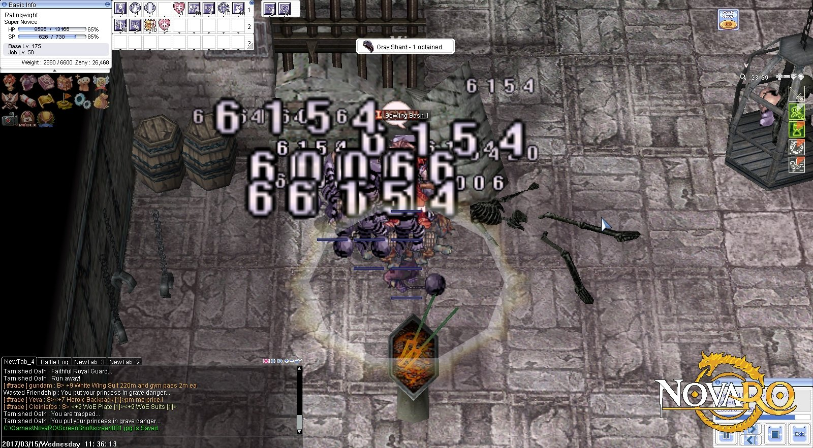 | 1.2 MB | G5457s | Meteor Strike SN in Ghost Palace | 1 |
| 15:23, 7 February 2020 | Ryuwc.gif (file) |  |
1.2 MB | Nithraniel | 1 | |
| 17:35, 25 February 2019 | MH.png (file) | 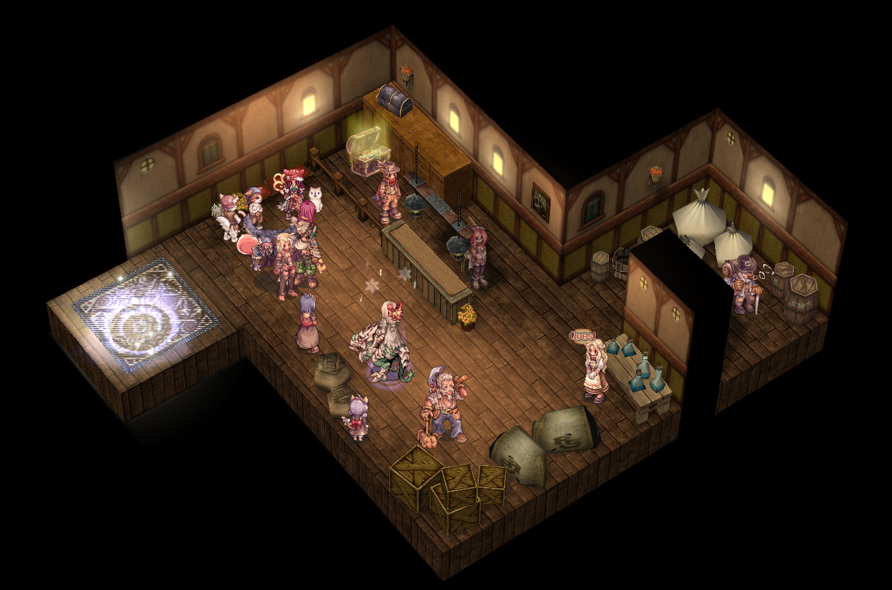 | 1.22 MB | Ara | 1 | |
| 15:45, 6 October 2018 | AldebaranAlchemy.png (file) | 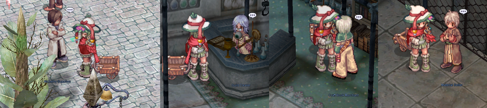 | 1.23 MB | AloeLeaflet | 1 | |
| 15:53, 10 October 2019 | Cinderfire Resize.png (file) | 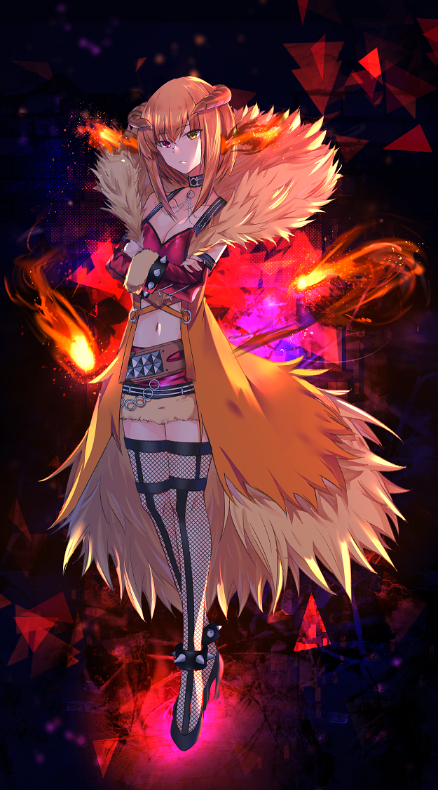 | 1.24 MB | Cinderfire | 1 | |
| 08:40, 13 July 2020 | Gatheringhub.png (file) |  |
1.25 MB | Randomced859 | Updated the gathering hub from this year. | 2 |
| 03:44, 2 November 2016 | StalkerFBMasq2.gif (file) | 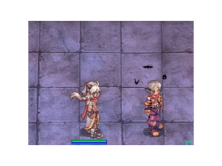 | 1.28 MB | VTours | 1 | |
| 14:39, 4 May 2023 | Shield Shooting.gif (file) |  |
1.33 MB | G00suede | 1 | |
| 23:52, 20 September 2017 | FlashCombo250.gif (file) | 1.34 MB | Halves | 1 | ||
| 12:49, 13 December 2022 | NovaEXT Turbo.png (file) | 1.35 MB | Tamugi | 1 | ||
| 01:37, 18 March 2023 | EDGray.gif (file) |  |
1.35 MB | G00suede | 1 | |
| 22:40, 25 July 2018 | Grotto.PNG (file) |  |
1.38 MB | Ara | King's Grotto Entrance 2018 | 1 |
| 15:10, 30 September 2016 | Ranger Aimed Bolt.gif (file) |  |
1.39 MB | Akenoyuki | for Fortunity Ranger PVM Guide | 1 |
| 09:13, 28 August 2020 | Darkness.gif (file) | 1.39 MB | G00suede | 1 | ||
| 06:37, 19 April 2022 | Spell circle.gif (file) |  |
1.39 MB | Miyu | 1 | |
| 21:47, 20 November 2022 | Rkspiralpierce.png (file) |  |
1.41 MB | Nithraniel | 1 | |
| 06:58, 1 December 2018 | Ragnarok Online - Arch Bishop KR and JP 2.png (file) | 1.43 MB | Hakumen | 1 | ||
| 06:48, 1 December 2018 | Ragnarok Online - Arch Bishop KR and JP.png (file) | 1.44 MB | Hakumen | 1 | ||
| 11:13, 9 April 2018 | Madomeme5b.gif (file) | 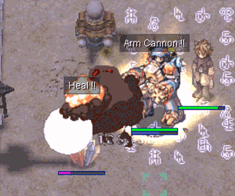 | 1.47 MB | RadenWA | 1 | |
| 03:14, 2 November 2016 | StalkerFKEscape3.gif (file) | 1.48 MB | VTours | 1 | ||
| 15:34, 6 March 2019 | Map-guide.png (file) |  |
1.53 MB | Alice | 1 | |
| 07:31, 28 October 2022 | Miyu new behavior reading.gif (file) |  |
1.56 MB | Miyu | Visuals of what new Reading Spell book looked like. | 1 |
| 03:13, 7 December 2022 | NightWatch.png (file) |  |
1.56 MB | Kancell | 1 |
{kind=link}
{kind=link}
{kind=link}
{kind=link}
{kind=link}
{kind=link}
{kind=link}
{kind=link}
{kind=link}
{kind=link}
{kind=link}
{kind=link}
{kind=link}
{kind=link}
{kind=link}
{kind=link}
{kind=link}
{kind=link}